Objectives
A few sentences on the purpose of the lab. Avoid bullet points here for formatting reasons.
How to use this lab
When you click on the lab card on the workshop screen (see example below) you will be presented with the labs steps screen

Lab steps
Next you will need to work your way through each step, starting with the objective (this screen) then work your way through the steps start with 01 then moving to 02 and so on.

Getting back to the home screen
In order to get back to the workshop screen simply click on the workshop name in the top left
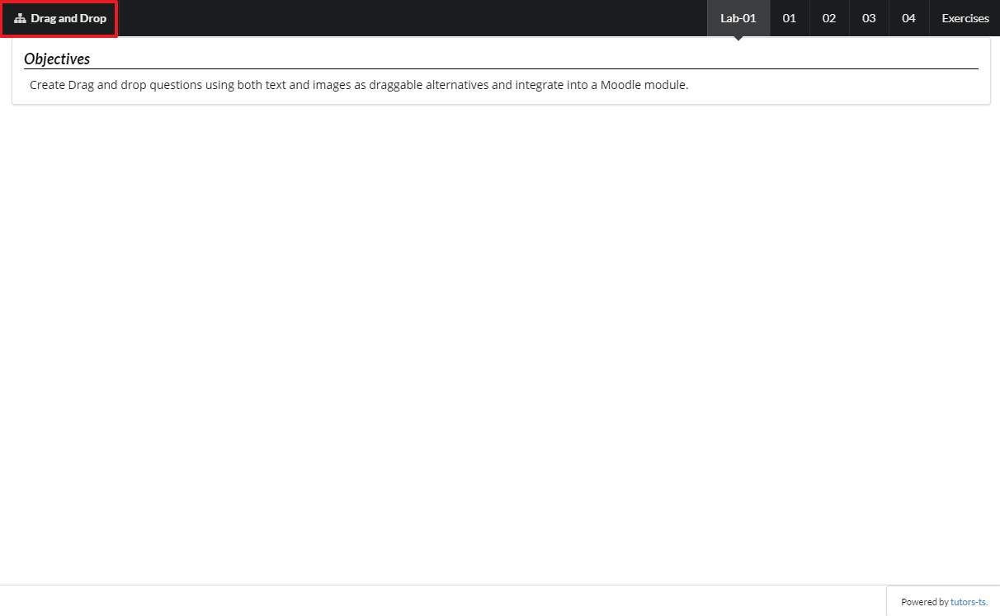
Next
Move to step 01 in the lab
lets get started
To view the Presentation component on the H5P website please follow the example link on the workshop page or click here
The Context
So for this presentation component I will use a presentation on the time-line of the Internet as an example, you may wish to use something elese that is related to your own area of expertise. We will develop some slides like a normal presentation however, the difference with this the H5P presentation is that it will have interactive elements such as multiple choice questions that engage the student.
Log into Moodle
Log into Moodle here and navigate to your sandbox area where you want to use the H5P flashcard component, at this stage we will start the process by adding the H5P Interactive Content type in Moodle.
Adding the activity
I have decided to call the section Presentation example but you may want to use some other name which is okay, select the Add an activity or resource option.

Add in Interactive Content
Now select the Interactive content type from the pop-up list
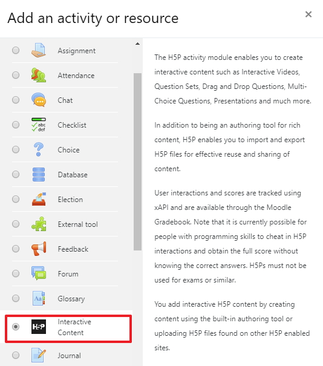
Search and use the correct Interactive Component
A this stage you will start to build the H5P Interactive content. Select or search find the editor for the component you plan on using, in this case it the Presentation, so I have started the search for "Pres"
Now you should see the flashcard component select the detail button
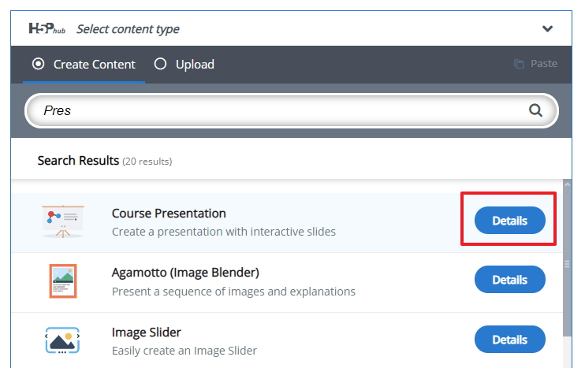
Now we can use this component now by selecting the "use" button
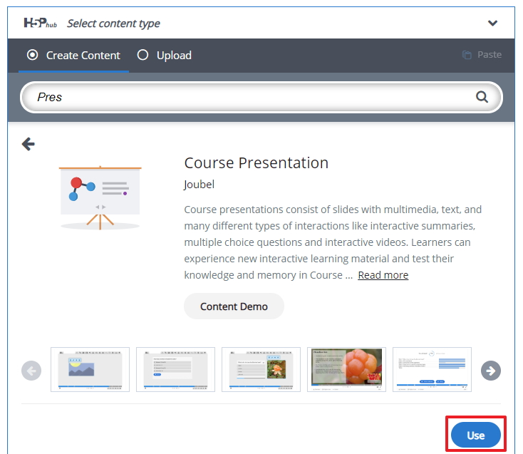
Next
Move to step 02 in the lab
Presentation context
This screen is slighty more complicated then previous workshops screens, what were are doing on the presentation setting screen is adding slides (images), this could be screenshots of the slide you covered in a lecture or they could be a summary version of toy slide you covered in a tutorial for example.
Settings explained
On the screen we see a few part that we need to explain first before we continue, starting with the Title, which is the title the user will see on the Moodle page. in this example I have called it "Internet time-line".
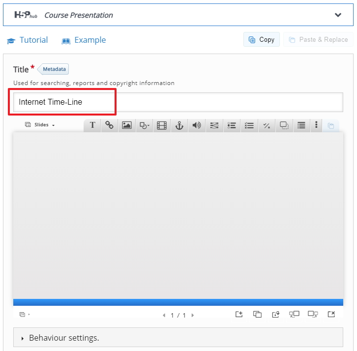
Adding Slides
At the bottom of the screen you will see an option to add a slide, delete a slide etc, you also see the slide number.
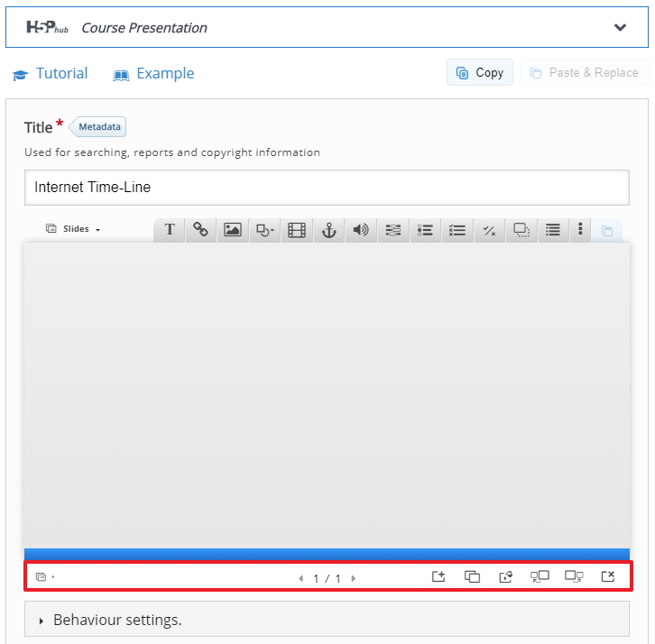
Adding content to a slide
When you add a slide you then can add content to each slide via the options at the top of the screen, so you can add an image to your slide, you can add in a video, hyperlink, text, Multiple Choice Questions, fill in the blanks, true or false and more. For this example we will add in images and we will also add in some questions for interactivity and student engagement
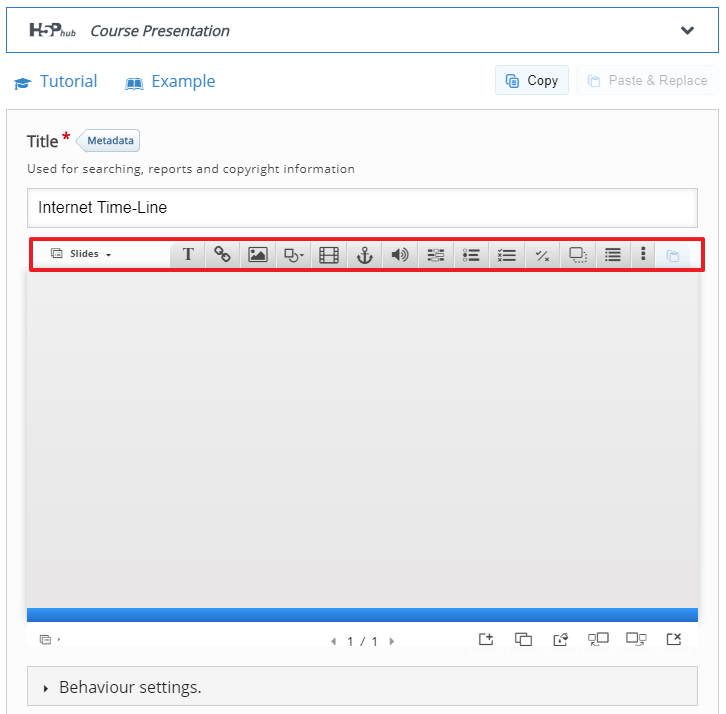
Slide 1
For the first slide I will add an image of content that I covered with some student and it covers the topic of the Time-line of the Internet, I have an image (.jpg) and I will add that to the slide.
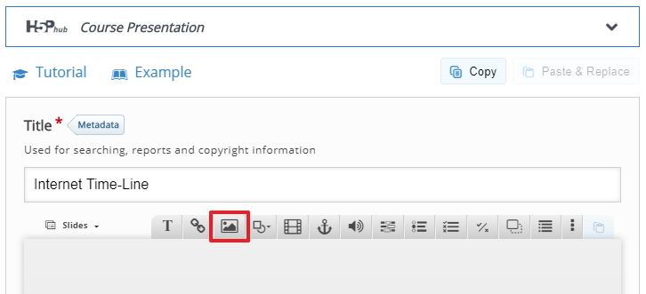
Next I will add to add the image by search for the image on my computer and adding it to the slide, you can leave the other fields blank for now
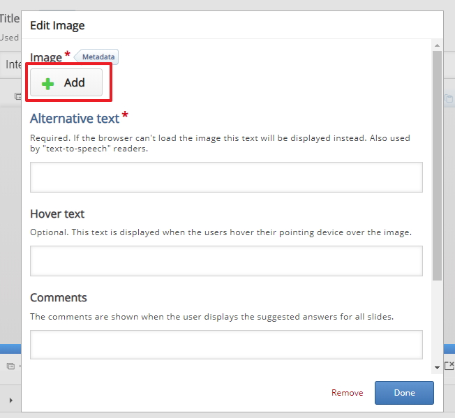
If you want you can add some copyright information via the Metadata option
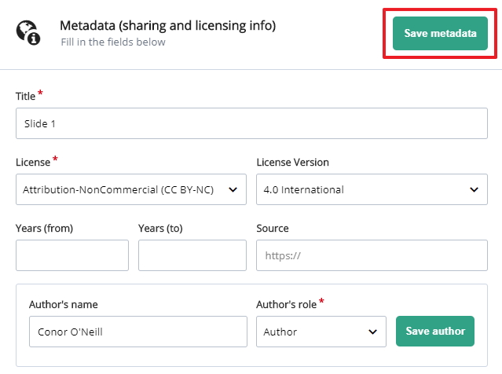
When you add in your image to the slide you will also have to type an alternative text, this could be a heading or a summary of the slide, Note: you will have to do this with every image you add to any slide.
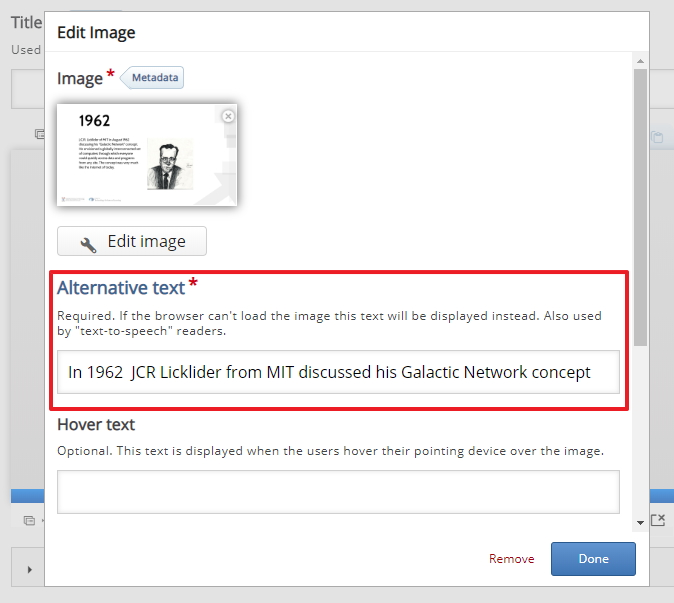
Resize Slide 1
You can now resize the image to the required size, in this case I'm going to make it fit to the whole screen by clicking and dragging the side of the image to the edges of the screen.
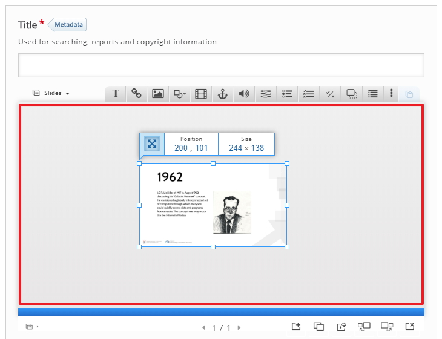
Next
Move to the next step.
Adding Questions
There are number of ways to achieve this, I'm going to include a blank slide after each content slide for the questions, this just make to a little easier to separate the questions from the content.
New Slide
After you have adjusted the size of you image on slide 1 click on the image to add a new slide
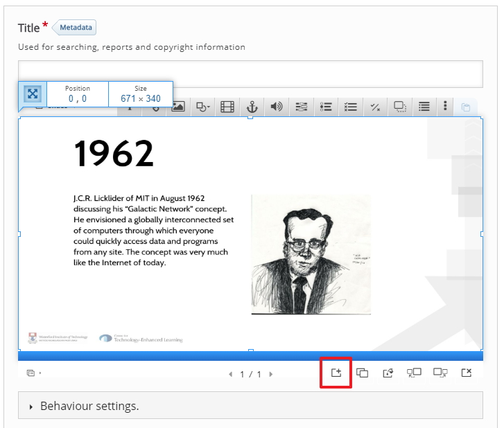
You can at this just add in the question or of you want you can add in an image, it doesn't matter really if you want to keep a consistent look and feel to this activity I would suggest using an image.
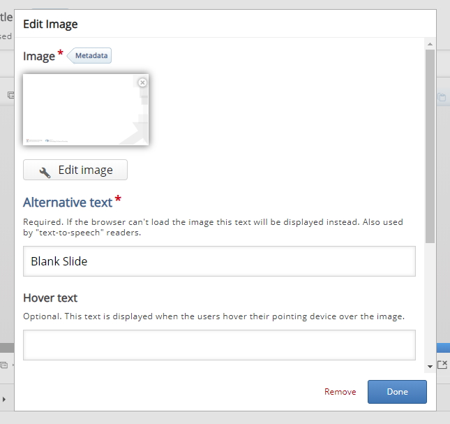
Question Types
There are number of different question type see below, for this example we will use the multiple choice question type
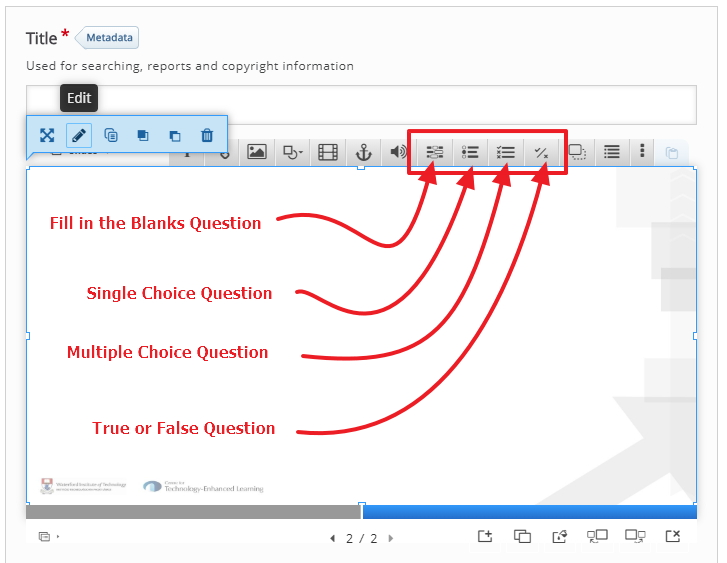
Slide 2 Question
After I placed the blank image on the slide 2 I then used a multiple choice question, I included the question "What was the name of Licklider's Concept?" and I also included 3 options, you have a choice of which option is correct (the first one is the correct one in this case)
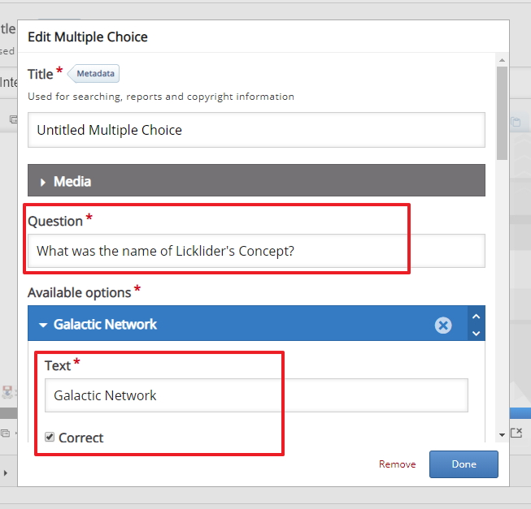
This what the students will be presented with when they reach slide 2 on the interactive H5P presentation.
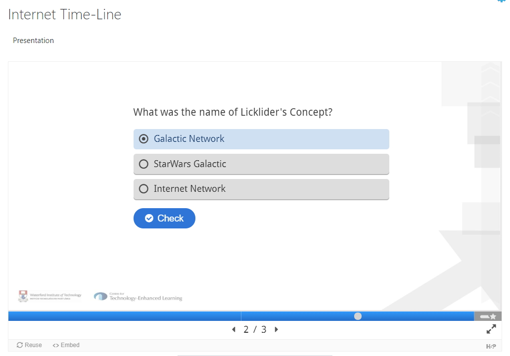
And after they check their answer.
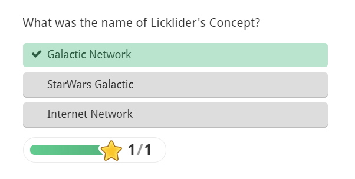
Next
Move to the next step.
Adding more slide
we have already include out content first slide and out first question slide, we will now repeat this by adding in anotehr slide but this time we will add a new question type.
Add a new Slide
To add a new slide to your existing slide just click the add slide icon
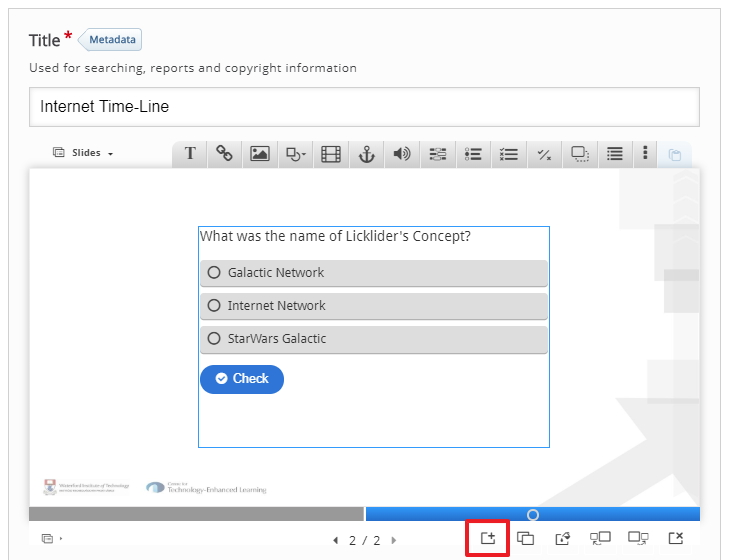
Add a new image
To add in a new image click the add image icon and upload you new image from your computer, don't forget to adjust the size of your image so tat it fits in the entire screen
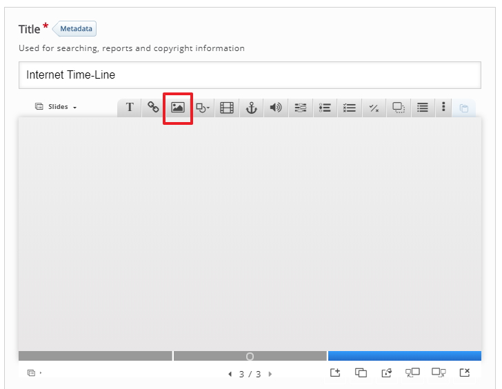
Add a new question Slide
To add a new question slide to your existing slide just click the add slide icon
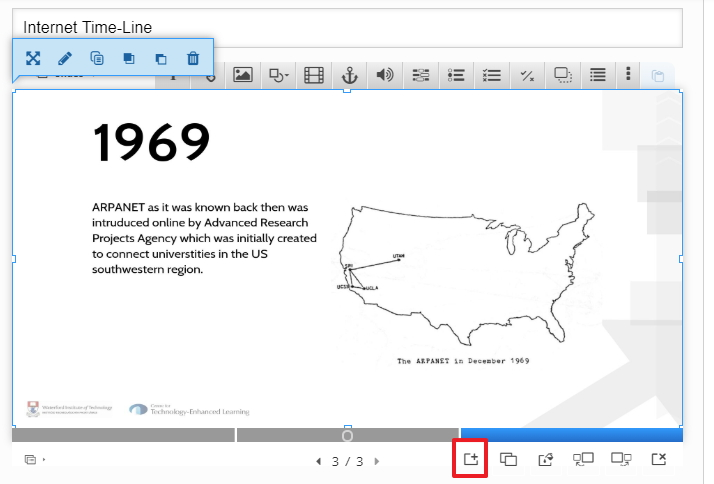
Add a blank image
On the question slide we just need a blank image, pr a blank background, so you have a couple of options, you can;
- Upload a blank image like you did for the first question
- You can leave the screen blank (don't upload any image)
For this example I am going to upload a blank image like we did for the first question type just to be consistent, so now you should have 4 slide and the 4th slide should be blank, again make sure you ajust the size of the image so it fit on the entire screen.
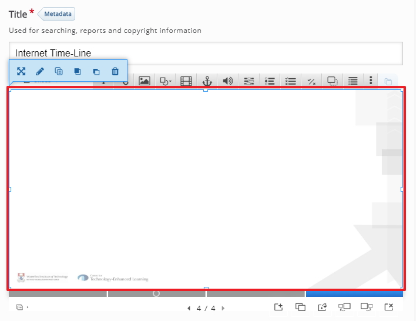
Add the Question
After I placed the blank image on the slide I then used a fill in the Blanks question on the blank slide, I included the question "ARPAnet stand for Advanced Research Projects Agenct Network" this is actually classes as 2 questions in 1 because the student has to fill in 2 blanks.
The output will look like the following
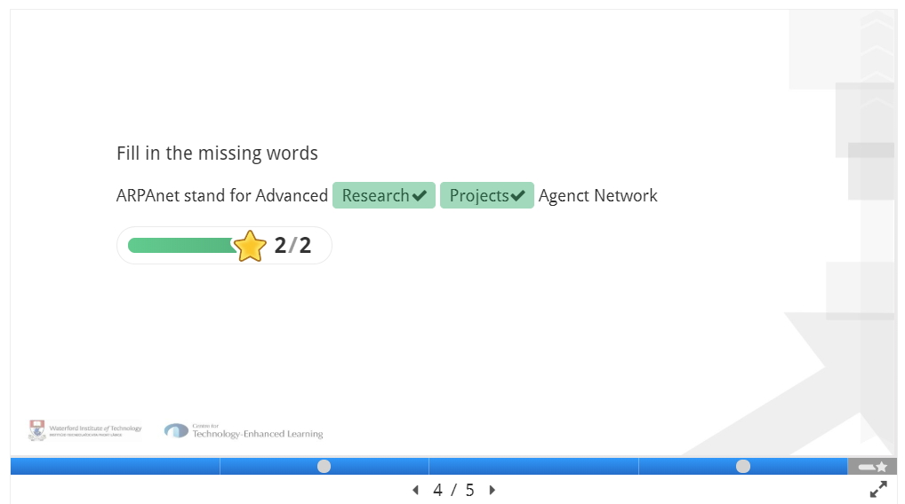
Adding more slides
You have added 2 content slides and 2 question slides, the process of adding more slides is the same, ito add more slide just repeat step 03 for each slide you want to add.
Next
Move to the exercise
Exercises
To complete this workshop please complete the Presentation activity in Moodle by completing the following;
- Create a third content slide on your H5P presentation
- Add a 3rd blank image slide and add a True or False question to the blank slide
Feedback
Please let us know if you had any issues with this workshop, we want to make improvements but we need you help, please take a few moment to fill in this feedback we appreciate all comments and suggestions
Accreditation
In order to receive your accreditation you will have to upload and submit your Presentation activity to Moodle.
step 1
First, you must download the presentation activity from your Moodle sandbox page, in order to download first view the H5P activity in Moodle in the bottom left of the screen you should see an option to reuse, click reuse
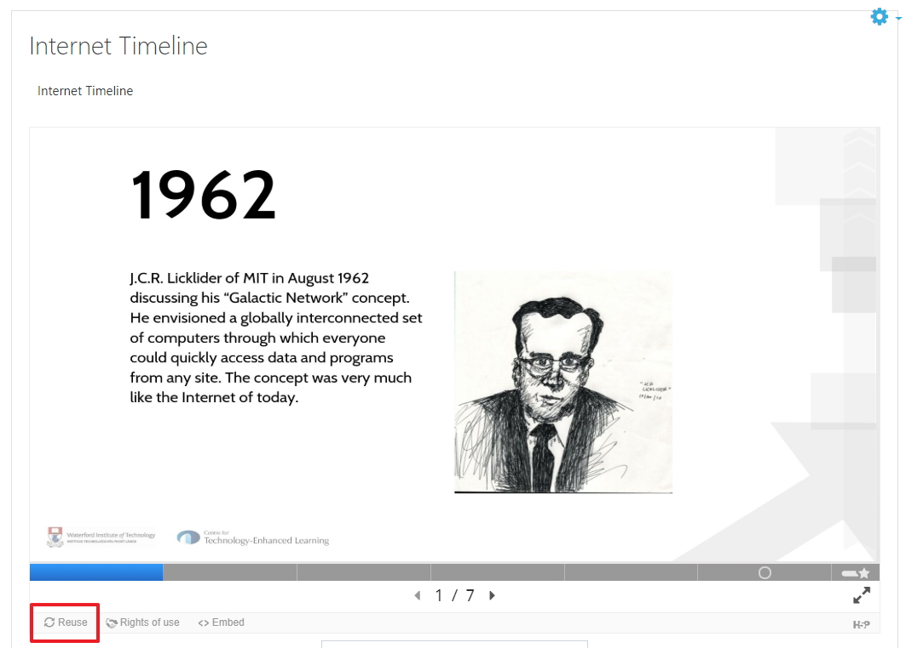
You can download the H5P activity bu selecting the Download as an .h5p file option
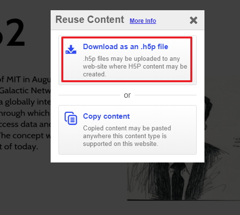
step 2
This file should be in your downloads folder on your computer, drag and drop that file from download to the dropbox area into the assignment submission area in Moodle, and click the add submission button here